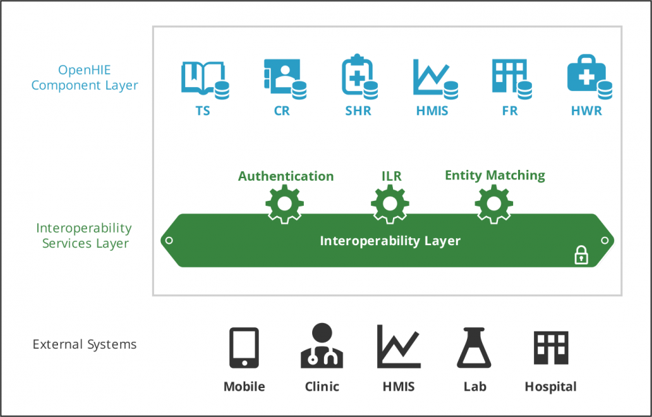
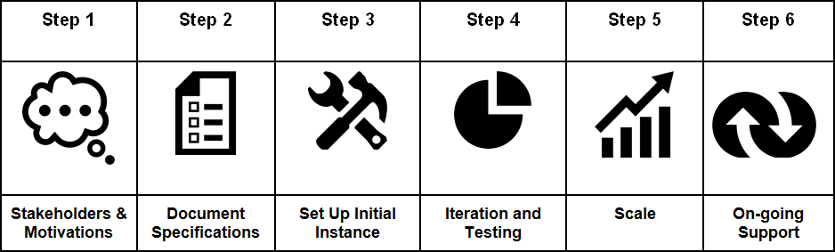

Table of Contents
DHIS2 is an open platform and its implementers are active contributors to interoperability initiatives, such as openHIE. The DHIS2 application database is designed with flexibility in mind. Data structures such as data elements, organisation units, forms and user roles can be defined completely freely through the application user interface. This makes it possible for the system to be adapted to a multitude of local contexts and use-cases. DHIS2 supports many requirements for routine data capture and analysis emerging in country implementations. It also makes it possible for DHIS2 to serve as a basic management system in domains such as logistics, laboratory management and finance.
Based on its platform approach, DHIS2 is able to receive and host data from different data sources and share it to other systems and reporting mechanisms. An important distinction of integration concepts is the difference between data integration and systems interoperability:
When talking about integration, we think about the process of making different information systems appear as one, making data available to all relevant users as well as the harmonization of definitions and dimensions so that it is possible to combine the data in useful ways.
A related concept is interoperability, which is one strategy to achieve integration. We consider DHIS2 interoperable with other software applications because of its capability to exchange data. For example, DHIS2 and OpenMRS are interoperable, because they allow to share data definitions and data with each other. Interoperability depends on standards for data formats, interfaces, codes and terminologies. These would ideally be internationally balloted standards, but in practice may also consist of de facto standards (which has wide acceptance and usage but is not necessarily formally balloted in a standards development organisation) and other more local agreements within a particular context.
To say that something is integrated, then, means that they share something, and that they are available from one place, while interoperability usually means that they are able to do this sharing electronically. DHIS2 is often used as an integrated data warehouse, since it contains (aggregate) data from various sources, such as Mother and Child health, Malaria program, census data, and data on stocks and human resources. These data sources share the same platform, DHIS2, and are available all from the same place. These subsystems are thus considered integrated into one system.
Interoperability in addition will integrate data sources from other software applications. For example, if census data is stored in a specialized civil registry or in a vital events system, interoperability between this database and DHIS2 would mean that census data would also be be accessible in DHIS2.
Finally, the most basic integration activity (that is not always taken into account in the interoperability discussion) is the possibility to integratedata from existing paper systems or parallel vertical systems into DHIS2. Data will be entered directly into DHIS2 without passing through a different software application. This process is based on creating consistent indicator definitions and can already greatly reduce fragmentation andenhance data analysis through an integrated data repository.
In most countries we find many different, isolated health information systems, causing many information management challenges. Public Health Information System have seen an explosive and often uncoordinated growth over the last years. Modern information technology makes it less costly to implement ICT4D solutions, which can lead to a high diversity of solutions. A staggering example was the mHealth moratorium declaration of Uganda´s MoH in 2012, as a reaction to an avalanche of around 50 mHealth solutions that were implemented within the course of a few years. Most of these solutions were standalone approaches that did not share their data with the national systems and rarely were developed beyond pilot status.
This may lead to the conclusion, that all systems should be connected or that interoperability is an objective in itself. However DHIS2 is often employed in contexts, where infrastructure is weak, and where resources to run even basic systems reliably are scarce. Fragmentation is a serious problem in this context, however interoperability approaches can only resolve some of the fragmentation problems - and often interoperability approaches result in an additional layer of complexity.
|
Example: Complexity of Logistics solutions in Ghana In the area of Logistics or Supply Chain Management, often a multitude of parallel, overlapping or competing software solutions can be found in a single country. As identified in a JSI study in 2012, eighteen (18!) different software tools were documented as being used within the public health supply chain in Ghana alone. |
Systems interoperability therefore seems as one possibility to remove fragmentation and redundancies and give public health officers a concise and balanced picture from available data sources. However the effort of connecting many redundant software solutions would be very high and therefore seems questionable. In a first step, focus should be on reducing the number of parallel systems and identifying the most relevant systems, afterwards these relevant systems can be integrated.
On this background, we want to define the major objectives of DHIS2 integration approaches:
Calculation of indicators: Many indicators are based on numerators and denominators from different data sources. Examples include mortality rates, including some mortality data as numerator and population data as denominator, staff coverage and staff workload rates (human resource data, and population and headcount data), immunization rates, and the like. For the calculation, you need both the numerator and denominator data, and they should thus be integrated into a single data warehouse. The more data sources that are integrated, the more indicators can be generated from the central repository.
Reduce manual processing and entering of data: With different data at the same place, there is no need to manually extract and process indicators, or re-enter data into the data warehouse. Especially interoperability between systems of different data types (such as patient registers and aggregate data warehouse) allows software for subsystems to both calculate and share data electronically. This reduces the amount of manual steps involved in data processing, which increases data quality.
Reduce redundancies: Often overlapping and redundant data is being captured by the various parallel systems. For instance will HIV/AIDS related data elements be captured both by both multiple general counselling and testing programs and the specialized HIV/AIDS program. Harmonizing the data collection tools of such programs will reduce the total workload of the end users. This implies that such data sources can be integrated into DHIS2 and harmonized with the existing data elements, which involves both data entry and data analysis requirements.
Improve organizational aspects: If all data can be handled by one unit in the ministry of health, instead of various subsystems maintained by the several health programs, this one unit can be professionalized. With staff which sole responsibility is data management, processing, and analysis, more specialized skills can be developed and the information handling be rationalized.
Integration of vertical programs: The typical government health domain has a lot of existing players and systems. An integrated database containing data from various sources becomes more valuable and useful than fragmented and isolated ones. For instance when analysis of epidemiological data is combined with specialized HIV/AIDS, TB, financial and human resource data, or when immunization is combined with logistics/stock data, it will give a more complete picture of the situation.
DHIS2 can help streamlining and simplifying system architecture, following questions such as:What is the objective of the integration effort? Can DHIS2 help reduce the number of systems? Can an DHIS2 integration help provide relevant management information at a lower cost, at at higher speed and with a better data quality than the existing systems? More practical information on defining these objectives can be found in STEP 1 of the 6-Step implementation guideline.
Since there are different use-cases for health information, there are different types of software applications functioning within the health sector. We use the term architecture for health information to describe a plan or overview of the various software applications, their specific uses and data connections. The architecture functions as a plan to coordinate the development and interoperability of various subsystems within the larger health information system. It is advisable to develop a plan that covers all components, including the areas that are currently not running any software, to be able to adequately see the requirements in terms of data sharing. These requirements should then be part of specifications for the software once it is developed or procured.
The openhealth information exchange (openHIE) is an interoperable interpretation of this architecture, with an HMIS or DHIS2 often assuming a significant role in it.The openHIE framework has been developed with a clear focus on countries in low resource settings, through the participation of several institutions and development partners, including the Oslo HISP program.
The schematic overview below shows the main elements of the openHIE framework, containing a component layer, an interoperability services layer and external systems.
|  |
The openHIE component layer covers meta or reference data (Terminology, Clients, Facilities), Personal data (Staff, Patient History) and national health statistics. The purpose is to ensure the availability of the same meta data in all systems that participate in the corresponding data exchange (e.g. indicator definitions, facility naming, coding and classification). In some cases, like the case of the Master Facility Registry, the data may also be used to provide information to the general public through a web portal. While the interoperability layer ensures data brokerage between the different systems, the external systems layer contains several sub-systems, many at point of service level, with often overlapping functional range.
There are different approaches to define an eHealth architecture. In the context of this DHIS2 guideline, we distinguish between approaches based on a 1:1 connection versus approaches based on an n:n connection (many-to-many).
In many countries a national HMIS is often the first system to be rolled out to a large number of facilities and to manage a large number of data on a monthly or quarterly basis. When countries start to develop their health system architecture further, DHIS2 often will be connected to some other systems. This connection is done directly through a simple script, which automates a data transfer.
We talk of a 1:1 connection because it is limited to two systems. In the case of an LMIS/HMIS integration, one LMIS (e.g. openLMIS as is the case in Tanzania) will transfer data to DHIS2 as defined in the script. In case a second logistics system would want to transfer data to DHIS2 (e.g. commodity data for a specific disease program), a second script would have to written, to perform this task. These two scripts would then run independently from another, resulting in two separate 1:1 connections.
This hands-on approach often represents a first step and is one of the most common use cases on the way to an interoperable openHIE architecture.
A different approach is based on placing a purpose-built software to serve as an interoperability layer or BUS approach, managing the data transfer between possibly several systems on either side (n:n). This could be the case if for example you wanted to collect stock level data through different LMIS applications, and then share it to a central warehouse LMIS, the HMIS and some vertical disease programs system. The openHIE reference software to assume this role is Jembi openHIM, but systems like Grameen Motech have also been used for this purpose as will be discussed below.
While this approach may result in a higher initial effort, it promises to make further integration project easier, because the interoperability layer is being alimented with definitions and mappings that can be re-used for connecting the next systems.
In practice, there are certain challenges to this approach. It takes a considerable effort of qualified resources to activate APIs and with each new release of any involved system, data flows require re-testing and if necessary adaptations. Also, to be successful these implementation projects typically have to go through a series of complex steps, such as the agreement on an interoperability approach embedded in the national eHealth strategy, the definition of data standards and sustainable maintenance structure, and attaining a stakeholder consensus on data ownership and sharing policies. There can be some long term consequences when data and systems are knitted together - it creates new roles, jobs and tasks which didn't exist before and may not have been planned for (metadata governance, complex system administration, boundary negotiators, etc.).
|
Example: Grameen DHIS2/CommCare middle layer in Senegal In a MIS/LMIS implementation in Senegal, Grameen MOTECH serves as technical middle layer between an LMIS (CommCare) and DHIS2, allowing to define data mapping, transformation rules and data quality checks. The interface is set-up to transfers data from CommCare Supply to DHIS2 whenever data is saved into a CommCare form at facilities. For each commodity, data on consumption, available stock, losses and stock-out data is transferred from CommCare to DHIS2. The higher initial investment of the Senegal approach hints towards a more ambitious long-term system architecture, foreseeing that the Grameen Motech platform may in future serve to accommodate further interoperability task. However we do not see any of the country activities tightly embedded in a text-book eHealth architecture, which would clearly define areas of priority, leading systems for each priority and the relations and resulting APIs between these different components. One may argue that interoperability projects are built on a weak foundation if there is no previous consensus on an architectural master plan. On the other hand it is also valuable to allow system initiatives to organically develop, as long as they are rooted in well-founded country needs. |
An important element of an eHealth architecture is the inclusion of international eHealth standards. Standards are especially relevant for n:n connections, less so for direct (1:1) connections.
Some standards are on the technical level (e.g. transmission methods), other on the contents side (e.g. WHO 100 core indicators). Gradually aligning national system initiatives to these standards can give countries access to proven solutions, benefitting from medical and technological innovation.
|
Example: Ghana EPI The Ghana case illustrates how the WHO EPI reporting requirements serves to define standard data in DHIS2. This standardization at the dataset and terminological level is the basis for the system integration. In the area of DHIS2, work is ongoing with WHO to develop standardized datasets, which could in the future open up new opportunities for interoperability and efficiency gains by offering some consistency of metadata across systems, and also encouraging countries to reuse existing solutions. |
At the language level, there is a need to be consistent about definitions. If you have two data sources for the same data, they need to be comparable. For example, if you collect malaria data from both standard clinics and from hospitals, this data need to describe the same thing if they need to be combined for totals and indicators. If a hospital is reporting malaria cases by sex but not age group, and other clinics are reporting by age group but not sex, this data cannot be analysed according to either of these dimensions (even though a total amount of cases can be calculated). There is thus a need to agree on uniform definitions.
In addition to uniform definitions across the various sub-systems, data exchange standards must be adopted if data is to be shared electronically. The various software applications would need this to be able to understand each other. DHIS2 is supporting several data formats for import and export, including the most relevant standard ADX. Other software applications are also supporting this, and it allows the sharing of data definitions and aggregate data between them. For DHIS2, this means it supports import of aggregate data that are supplied by other applications, such as OpenMRS (for patient management) and iHRIS (for human resources management).
A crucial element of the architecture is how organize data mapping. Typically the metadata of different systems does not match exactly. Unless an MoH has been enforcing a consequent data standard policy, different systems will have different codes and labels for a facility. one System may call it District Hospital - 123, the other system may refer to it as Malaria Treatment Centre - 15. To be able to transfer data, somewhere the information that these two facilities correspond needs to be stored.
In the case of a 1:1 connection, this mapping has to be done for every connection, in case of an n:n interoperability approach, one side of the definitions can be re-used.
In order to assure that the data can flow smoothly, you need to have clear responsibilities on both sides of the system regarding data maintenance and troubleshooting. For example, there need to be previously defined standard procedures for such activities as adding, renaming, temporarily deactivating or removing a facility on either of the two systems. Changes of database fields that are included in a transferred data record need also to be coordinated in a systematic way.
DHIS2 has been expanding its reach into many health systems. Starting from its familiar grounds of aggregate data sets for routine data it has included patient related data and then data in the areas of HR, finance, logistics and laboratory management, moving towards operational or transactional data.
We can differentiate between transactional and aggregate data. A transactional system (or operational system from a data warehouse perspective) is a system that collects, stores and modifies low level data. This system is typically used on a day-to-day basis for data entry and validation. The design is optimized for fast insert and update performance. DHIS2 can incorporate aggregate data from external data sources, typically aggregated in the space dimension (the organisation unit hierarchy), time dimension (over multiple periods) and for indicator formulas (mathematical expressions including data elements).
When we look at a transactional system, such as a logistics software for the entire supply chain or parts of it, there is one fundamental decision to take: Do you need to track all detailed transactions at all levels, including such operations as returns, transfer between facilities, barcode reading, batch and expiry management? Or can you get most of your results using aggregate data?
Supply chains can often be well controlled with aggregate data only, as long as data is provided reliably from all relevant levels and followed up upon. The main indicators intake, consumption and stock level at the end of period can be managed without electronic transactions and often suffice to give the big picture, reducing the needs for system investment.
![[Note]](file:/C:/Program%20Files/Oxygen%20XML%20Author%2018/frameworks/docbook/css/img/note.png) | Note |
|---|---|
The expectation, that more detailed data leads to better logistics management is not always fulfilled. Sometimes the ambitious attempt to regularly collect logistics transaction data results in less data quality, for example because the data recording, which may have to happen on a daily basis instead of a monthly or quarterly basis, is not carried out reliably. On the other hand, if the transactional system is well maintained and monitored, more detailed data may lead to discover inaccuracies and data quality challenges. Analysing these may help to discover root causes of some problems and improve the data quality in the long run. |
DHIS2 can assume different roles in interoperability scenarios. A common interoperability scenario is for DHIS2 to receive aggregate data from an operational system, in which case the operational system adds up the transactions before passing it on to DHIS2. However, DHIS2 may to a certain extent also be configured to store detailed transactional data, receiving it from external systems or through direct data entry in DHIS2.
On this basis we try making a comparative overview, comparing aggregate DHIS2 data management with data management of external specialized system. This can serve as a rough orientation, but is not static since both the capabilities of DHIS2 and its interpretation by implementers are broadening with almost each release.
| Area | Aggregate DHIS2 | External specialized systems |
|---|---|---|
| Logistics | Aggregate data, e.g. end-of-month facility stock levels can be send through DHIS2. DHIS2 can produce simple stock level and consumption reports. | Supply chain management systems can track detailed stock movements (receiving, return, transfer, destruction) and record details such as production batch numbers. At HQ level, SCM systems typically create forecasting, replenishment and elaborate control reports. |
| Finance | Aggregate data, e.g. on total expenditure or cash level can be send through DHIS2. DHIS2 can produce simple finance overview reports, e.g. on remaining budgets. | Finance management systems allow fully traceable recording of financial transactions according to legal requirements, including budgeting, transfers, cancellations, reimbursements etc. Multi-dimensional tagging of transactions allows for analytical reports. |
| Patient tracking | Disease or program related data are collected by DHIS2, DHIS2 Tracker also allows a simplified longitudinal view on medical records, including patient history and multi-stage clinical pathways. | Specialized hospital management systems can cover and optimize complex workflows between different departments (e.g. reception, payment counter, wards, OPD, IPD, laboratory, imaging, storeroom, finance and HR administration, medical device maintenance, etc.). |
| Human Resources | DHIS2 collects human resource related indicators, for example planned positions and vacancies per facility. | A specialized HR management system can track detailed status information and changes for a Health Worker (accreditation, promotion, sabbatical, change of position, change of location, additional training, etc.). It comes with pre-designed reports for both operational oversight and planning. |
The different objectives described above lead to different integration scenarios. DHIS2 can assume multiple roles in a system architecture:
Data input: data entry (offline, mobile), data import (transactional data, aggregate data)
Data storage, visualisation and analysis with in-built tools (DWH, reports, GIS)
Data sharing to external tools (e.g. DVDMT) , via web APIs, web apps
In the following paragraphs we discuss the data input and data sharing approaches, then we present the example of the vertical integration where DHIS2 often assumes all these roles.
The role of DHIS2 to store, visualise and analyse data is discussed seperpately in the data warehouse section.
There are several aspects on how DHIS2 deals with data input. On the most basic level, DHIS2 serves to replace or at least mirror paper-based data collection forms, integrating the data electronically. This will result in manual data entry activities at facility or at health administration level. The next input option is to import data. DHIS2 allows to import data through a user interface, which is a method requiring little technical knowledge, but needs to be executed manually every time data needs to be made available. A detailed description of the import functions can be found in the DHIS2 user guides.
|
Practical note: The manual data entry and import approach require relatively little technical effort. They may also be used temporarily to pilot a data integration approach. This allows user to test indicators and reports, without having to employ dedicated technical resources for the development of automated interoperability functions, either through a 1:1 or an n:n connection. |
There are three sharing scenarios, (1) a simple data export, (2) DHIS2 apps and (3) external apps or websites connecting to the DHIS Web API. Similar to the import functions described in the data input section, the most accessible way of data sharing is to use the data export functions that are available from the user menu, requiring little technical knowledge.
Due to its modular design DHIS2 can be extended with additional software modules, which can be downloaded from the DHIS2 App store. These software modules can live side by side with the core modules of DHIS2 and can be integrated into the DHIS2 portal and menu system. This is a powerful feature as it makes it possible to extend the system with extra functionality when needed, typically for country specific requirements as earlier pointed out.
The downside of the software module extensibility is that it puts several constraints on the development process. The developers creating the extra functionality are limited to the DHIS2 technology in terms of programming language and software frameworks, in addition to the constraints put on the design of modules by the DHIS2 portal solution. Also, these modules must be included in the DHIS2 software when the software is built and deployed on the web server, not dynamically during run-time.
In order to overcome these limitations and achieve a looser coupling between the DHIS2 service layer and additional software artefacts, the DHIS2 development team decided to create a Web API. This Web API complies with the rules of the REST architectural style. This implies that:
The Web API provides a navigable and machine-readable interface to the complete DHIS2 data model. For instance, one can access the full list of data elements, then navigate using the provided hyperlink to a particular data element of interest, then navigate using the provided hyperlink to the list of forms which this data element is part of. E.g. clients will only do state transitions using the hyperlinks which are dynamically embedded in the responses.
Data is accessed through a uniform interface (URLs) using a well-known protocol. There are no fancy transport formats or protocols involved - just the well-tested, well-understood HTTP protocol which is the main building block of the Web today. This implies that third-party developers can develop software using the DHIS2 data model and data without knowing the DHIS2 specific technology or complying with the DHIS2 design constraints.
All data including meta-data, reports, maps and charts, known as resources in REST terminology, can be retrieved in most of the popular representation formats of the Web of today, such as HTML, XML, JSON, PDF and PNG. These formats are widely supported in applications and programming languages and gives third-party developers a wide range of implementation options.
This Web API can be accessed by different external information system. The effort needed for developing new information systems and maintaining them over time is often largely underestimated. Instead of starting from scratch, a new application can be built on top of the Web API.
Extenal systems can offer different options for visualizing and presenting DHIS2 data, e.g. in the form of dashboards, GIS and charting components. Web portals targeted at the health domain can use DHIS2 as the main source for aggregate data. The portal can connect to the Web API and communicate with relevant resources such as maps, charts, reports, tables and static documents. These data views can dynamically visualize aggregate data based on queries on the organisation unit, indicator or period dimension. The portal can add value to the information accessibility in several ways. It can be structured in a user-friendly way and make data accessible to inexperienced users. An example for this is the Tanzania HMIS Web Portal.
Taking into account all the above elements on system architecture and data types, DHIS2 implementers have several options on how to approach implementations:
Focus on transactional or aggregate data
Focus on data integration or systems interoperability
Given the efforts required to implement systems interoperability, many Ministries of Health are going for the pragmatic shortcut of integrating data such as basic stock level data directly into their existing national DHIS2. As a rapidly evolving platform, DHIS2 has been adding a lot of functionality over the last years, especially in DHIS2 Tracker. Taking the example of logistics data, the following main functions are currently available:
Data entry form mirroring the widely used Report and Requisition (R&R) paper form. Data entry by facilities is possible through the desktop browser or a mobile app, including in offline mode. These electronic forms can be filled by staff based on the paper stock cards, that are normally placed next to the commodity in the store room.
DHIS2 can then produce reports for central decision making, giving commodity and program managers the possibility to accept or modify delivery suggestions.
Stock data can be transformed into logistics indicators, that can be put into context with other program indicators, for example cross-referencing number of patients treated with a specific pathology and corresponding drug consumption.
Although each country that we look at in the use cases has their own development path towards system integration, some common learnings can be drawn from their experiences. The maturity model below describes an evolutionary approach to cope with integration and interoperability challenges, allowing the different stakeholders in a national Health System to grow professional analytics and data usage habits.
The maturity model suggests moving from aggregate data to transactional data and from stand-alone to interoperable systems (using the example of logistics data).
DHIS2 is often one of the first systems to cover the health administration and several facility levels of a country. At first core disease indicators are covered (for example corresponding to the 100 WHO Core Health Indicators).
In a second phase, different stakeholders seek to complement the disease and service delivery data they are reporting with basic LMIS data. This can be done on an aggregate basis in DHIS2, e.g. by including stock levels and consumption in periodic reports.
At a more mature stage, there may be a legitimate need for specialized logistics systems, especially when a very detailed transactional view is wanted to have a more granular control, (e.g. returns, transfers between facilities, batch numbers and expiries, etc.). DHIS2 Tracker can offer some event or patient related data management functions, but cannot always respond to the needs for a specialized external system.
In a mature technological and managerial environment, the logistics transactions can be shared to DHIS2 in an aggregate form, moving from a stand-alone to an integrated scenario.
The purpose of this step-by-step DHIS2 Implementation Guide is to provide a methodology for implementers to create and support a DHIS2 integration scenario. The guide is based on the best practices and lessons learned. The guide advocates for a country driven, iterative, and agile approach that begins with collecting user stories and functional requirements. The guide is intended as a framework that can be adapted to the specific context of each country. The content describes specific examples for each step detailing user stories, data specifications, job aids and checklists to guide the use of the reference implementation software. The basic structure, including the 6 steps, are based on the OpenHIE implementation methodology:
Step 1: Identify Stakeholders and Motivations for Improved Facility Data
Step 2: Document Facility Registry Specifications and User Stories
Step 3: Set Up Initial Instance
Step 4: Identify Gaps & Iterative Development via User Testing
Step 5: Scaling the Registry Implementation
Step 6: Provide Ongoing Support
|  |
In addition to these steps related to interoperability, it is also interesting to reference back to some of the general DHIS2 implementation experiences and best practises given in the sections on Recommendations for National HIS Implementations and Setting Up a New Database. A typical DHIS2 implementation approach which is also vital for interoperability projects is a participatory approach. This approach stresses to include right from project start a local team with different skills and background to assume responsibility as soon as possible.
In a first step, the objectives of the integration project will be defined. As with every technology project, there should be a clear consensus on strategic and functional objectives. Technological innovation and feasibility should not be the sole driving force but rather a clearly defined organisational goal. Therefore this step is also intended to answer the question: “Why do we want to connect systems or integrate data from different sources with DHIS2?”
On a practical level, this leads to questions on the data integration approach, such as:
Do you want to eliminate paper forms or even eliminate data sets that are redundant or not needed anymore?
Can you integrate the (aggregate) data into DHIS2?
Can you integrate the detailed (e.g. patient level or transactional) data into DHIS2, using DHIS2 tracker functions?
If you want to create a data exchange connection between DHIS2 and another system, how do you define ownership and responsibilities?
Activities to answer this question are described below and will lay the groundwork for an DHIS2 interoperability project.
It is in the nature of interoperability projects to have more than one stakeholder. Stakeholders from different areas need to agree on a common system approach, for example the team responsible for the national HMIS (e.g. the M#038;E department or Planning Department) and the Logistics Department in case of an LMIS implementation. These two main areas often have sub-divisions, e.g. in the LMIS area the procurement unit, the warehousing unit, the transport unit. In addition, stakeholders from disease specific programs will have their own regimens and commodity managers. In addition to these local actors, international partners (agencies, donors, iNGOs, consultancies) are often also involved in the decision making process.
Therefore it´s interesting to look at the main motivations of the stakeholders and how to mitigate risks resulting from potential diverging interests.
Central MoH Departments such as M&E & Planning often are the main stakeholders for a standardisation of indicators and IT Systems
Central IT departments have a general interest over (often locally controlled) technology choices and ownership, hardware and software purchases. They are often dealing with network and hardware issues but lack experience dealing with complex web-based architectures and data exchanges.
Specialized disease programs are often under pressure to deliver very program specific indicators, both for their own management but also responding to donor driven approaches. They may also feel more comfortable controlling their proper IT system to be sure their needs are prioritized.
Specialized functional areas (such as Human Resources, Logistics, Hospital Management) are often in a sandwich position, having to cater to the information needs of several different stakeholders, while trying to achieve operational efficiency with limited resources.
By identifying who is interested to provide or utilize the data, the lead implementers can start to form a project team to inform the design and implementation. One method for characterizing stakeholders involves grouping interested parties by their functional roles. The existing infrastructure and procedures are also important to understanding governance and curation options. Understanding the stakeholders and their corresponding systems is a critical first step. Below are job aides to assist in this initial process.
|
Job aides
|
It is important to get a clear view on the overall IT systems landscape. This can help make sure that interoperability investment is done to strengthen the main systems and that the investments contribute to a simplification of the system architecture. For example, if the system inventory shows that there are a lot of redundant functional systems, e.g. more than 10 different logistics systems or modules in a country, the interoperability project should try to contribute to a mid or long-term rationalization of this situation. This could mean to participate in a national consensus finding process to identify the most future-proof solutions, identify national “champions” for each speciality and develop a roadmap for aligning these systems or data and removing underutilized or redundant systems.
Also in this context it is interesting to analyse whether simple indicators can be collected and managed in DHIS2 itself (as this is later explained in an LMIS example). Once the stable and sustainable systems have been identified, planning for a data exchange with DHIS2 can start.
The motivations driving an implementation can be detailed by the perceived opportunities or challenges that stakeholders face. This might include the desire to share data across systems related to health facilities for supply chain management, monitoring and evaluation, health service delivery and many other systems. User stories and use cases will be documented in depth during Step 2, but a high level vision of motivations to engage with partners is also needed. The job aides below will help to create a conceptual foundation for future activities.
|
Job aid Country Example
|
Clear national policies on data integration, data ownership, routines for data collection, processing, and sharing, should be in place at the start of the project. Often some period of disturbance to the normal data flow will take place during integration, so for many the long-term prospects of a more efficient system will have to be judged against the short-term disturbance. Integration is thus often a stepwise process, where measures need to be taken for this to happen as smoothly as possible.
|
Country example: Ghana CHIM
|
Also, having clearly defined system maintenance and update procedures can certainly help to manage interoperability.
|
Country example: Ghana CHIM As an example, in the case of Ghana DHIS2, a clear yearly system update cycle is in place: Towards the end of each year, new indicators are created and the corresponding paper forms are issued. Staff will receive training and is prepared for data entry. The new form for EPI data was included in this update cycle and EPI staff was prepared for data entry as part of the process. This systematic procedure allows GHS to quickly respond to the needs of stakeholders such as the EPI Programme and accommodate their data and reporting needs with a limited and predictable investment. It puts CHIM in a position to contribute to the rationalization and simplification of the national Health System Architecture, gradually integrating the data management for more vertical programs, both on the side of data entry and analytics. |
A key principle for HISP is to engage the local team in building the system from the very beginning, with guidance from external experts if needed, and not to delay knowledge transfer towards the end of the implementation. Ownership comes first of all from building the system and owning every step of this process.
Collect existing metadata
Document data specifications
Document user stories
Implement the specifications
Identify and piroritize incomplete user stories
Agile and iterative development
User testing
Collect, reconcile and upload data
While during the implementation phase a temporary support structure should be available, afterwards a permanent support structure needs to be set-up. The main challenge is to have clear responsibilities. In an ideal situation, we are dealing with two stable systems that each have already their own clearly defined support structure.
However in reality some recurring challenges may have to be dealt with: Many Public Health System are undergoing dynamic developments, leading to changes in data collection needs or calculation of indicators.
Interoperability tends to be a tedious technical and organisational charge. All of the three described initiatives have consumed a considerable effort of qualified resources to activate APIs. In addition, with each new release of any involved system, data flows require re-testing and if necessary adaptations. To be successful these implementation projects typically have to go through a series of complex steps, such as the agreement on an interoperability approach embedded in the national eHealth strategy, the definition of data standards and sustainable maintenance structure, and attaining a stakeholder consensus on data ownership and sharing policies. There can be some long term consequences when data and systems are knitted together - it creates new roles, tasks and categories of labour which need to be planned for (metadata governance, complex system administration, boundary negotiators, etc.). A solution could be to discuss the new responsibilities beforehand, assigning them to job descriptions, teams and specific positions.
Another important area is that of metadata governance, particularly in the scenarios of secondary use of data. In a stand-alone set-up, metadata, such as facility or commodity codes can be managed without much consideration of other stakeholder´s needs. But in an interoperability environment, metadata changes will have effects outside of the individual system. Metadata governance can be highly formalised through registries or more manual through human processes.
In order to determine the appropriate approach, is it useful to estimate the expected metadata maintenance effort and the consequences of unsynchronized metadata across different systems. In the case of the LMIS/DHIS2 integrations, there are potentially thousands of facility identifiers that could go out of synch. However normally, facility identifiers do not change often since the physical infrastructure of most public health system is relatively constant. As to the commodities, although regimes and priority drugs may change over time, the number of datasets is relatively small.
DHIS2 has been expanding its reach into many health systems. Starting from its familiar grounds of aggregate data sets for routine data it has included patient related data and then data in the areas of HR, finance, logistics and laboratory management. This is in line with the development of DHIS2 in many country settings, where implementers are pushing the use beyond its originally intended scope.
This is also reflected in the overall system architecture. Since the expanding functionality of DHIS2 reduces the urgency to introduce or maintain other specialized systems, the number of potential data interfaces decreases. This reduced complexity in system architecture is certainly a benefit for a Health System with limited resources.
For several years now, DHIS2 has grown its data management activities organically, allowing the actual usage to lead to sometimes unforeseen solutions. However, there are also limits to where leveraging DHIS2 seems useful. In the following sections, special systems will be described.
a) Introduction
Logistics Management Systems (LMIS) or Supply Chain Management Systems (SCM) serve to replace paper systems to increase standardization, transparency, timeliness of procurement, efficiency, safety, cost-effectiveness, and to reduce waste. National SCMS/LMIS can cover such functions as commodity planning, budgeting, procurement, storage, distribution and replenishment of essential drugs and consumables.
b) Implementing LMIS in DHIS2
Supply chains can often be well controlled with aggregate data only, as long as data is provided reliably from all relevant levels and followed up upon. The main indicators intake, consumption and stock level at the end of period can be managed without electronic transactions and often suffice to give the big picture, reducing the needs for system investment. As a rapidly evolving platform, DHIS2 has been adding a lot of functionality over the last years, especially in DHIS2 Tracker. The following main functions are currently available:
Data entry form mirroring the widely used Report and Requisition (R&R) paper form. Data entry by facilities is possible through the desktop browser or a mobile app, including in offline mode. In online mode the form can calculate requisition proposals, offering the facility manager to modify the request and comment on it. These electronic forms can be filled by staff based on the paper stock cards, that are normally placed next to the commodity in the store room.
DHIS2 can then produce reports for central decision making, giving commodity and program managers the possibility to accept or modify delivery suggestions.
Stock data can be transformed into logistics indicators, that can be put into context with other program indicators, for example cross-referencing number of patients treated with a specific pathology and corresponding drug consumption.
c) Interoperability Options
LMIS is an area where a multitude of parallel, overlapping or competing software solutions can be found in a single country. As identified in a JSI study in 2012 (Ghana Ministry of Health, July 2013: Landscape Analysis of Supply Chain Management Tools in Use), eighteen (18!) different software tools were documented as being in use within the public health supply chain in Ghana alone.
Although a basic LMIS configuration based on aggregate data can take you very far, in some cases a transactional LMIS is necessary if you need to track such detailed operations as returns, transfer between facilities, barcode reading, batch and expiry management. Also some specialized HQ functions such as creating forecasting, replenishment and elaborate control reports are often done in specialized tools.
DHIS2 has integrated aggregate data from external systems such as openLMIS and CommCare through automated data interfaces. As a result, stock data is available in shared dashboards, displaying health service and stock data next to each other.